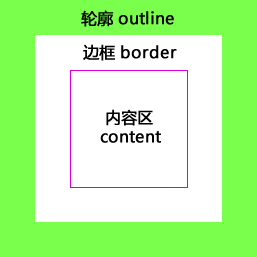
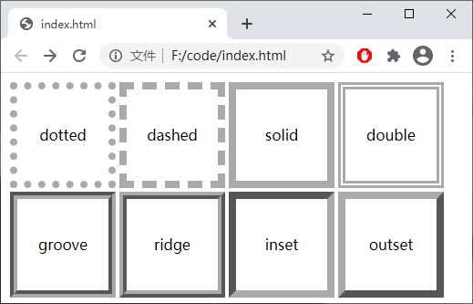
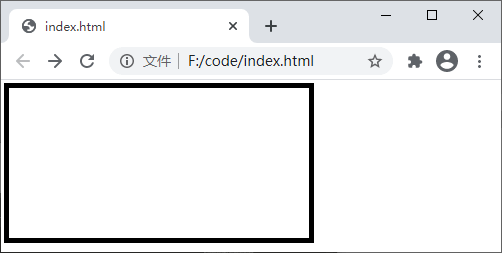
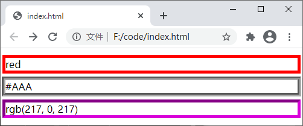
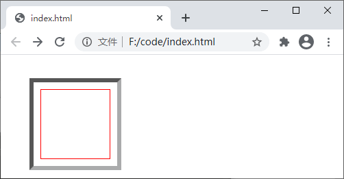

CSS outline（轮廓）
轮廓（outline）是绘制于元素周围的一条线，位于边框的外围（紧贴着边框），主要用来突出显示某个元素，如下图所示：
轮廓和边框看起来非常相似，但它们之间也并非没有区别，例如：
您可以使用下面几个属性来为元素设置轮廓：
【示例】使用 outline-style 属性设置轮廓的样式：
【示例】使用 outline-width 属性设置轮廓的宽度：
【示例】使用 outline 属性设置元素的轮廓：
图：outline 属性演示
【示例】使用 outline-offset 设置轮廓与边框之间的距离：

图：轮廓（outline）
图：轮廓（outline）
轮廓和边框看起来非常相似，但它们之间也并非没有区别，例如：
- 元素上下左右四个方向上边框的样式、宽度、颜色可以单独设置，而轮廓在元素四个方向的宽度、样式、颜色都是相同的，不能单独设置；
- 边框的宽度会直接影响元素的尺寸，而轮廓不会占用页面空间，不会影响页面的布局，但是轮廓会与页面上的其它元素发声重叠；
- 除了会与周围的元素发声重叠外，轮廓对周围的元素没有任何影响；
- 边框是元素尺寸的一部分，而轮廓不是，也就是说无论轮廓的宽度是多少，元素的尺寸都不会改变；
- 轮廓可以不是矩形的，但您不能直接创建圆形轮廓。
您可以使用下面几个属性来为元素设置轮廓：
- outline-color：设置轮廓的颜色；
- outline-style：设置轮廓的样式；
- outline-width：设置轮廓的宽度；
- outline：轮廓的简写属性，可以使用 outline 属性中同时设置上面的三个轮廓属性；
- outline-offset：设置轮廓与边框之间的距离。
1. outline-style
outline-style 属性可以设置轮廓得样式，属性得可选值如下所示：| 值 | 描述 |
|---|---|
| none | 默认值，没有轮廓 |
| dotted | 定义点状的轮廓 |
| dashed | 定义虚线轮廓 |
| solid | 定义实线轮廓 |
| double | 定义双实线轮廓，两条实线之间的宽度等同于 outline-width 的值 |
| groove | 定义 3D 凹槽轮廓，具体效果取决于 outline-color 的值 |
| ridge | 定义 3D 凸槽轮廓，具体效果取决于 outline-color 的值 |
| inset | 定义 3D 凹边轮廓，具体效果取决于 outline-color 的值 |
| outset | 定义 3D 凸边轮廓，具体效果取决于 outline-color 的值 |
| inherit | 从父元素继承轮廓样式的设置 |
【示例】使用 outline-style 属性设置轮廓的样式：
<!DOCTYPE html>
<html>
<head>
<style>
span {
display: block;
width: 100px;
height: 100px;
margin: 10px;
float: left;
text-align: center;
line-height: 100px;
/*为了能更直观的看出轮廓的效果，这里提前设置了轮廓的宽度和颜色*/
outline-width: 8px;
outline-color: #AAAAAA;
}
.dotted {
outline-style: dotted;
}
.dashed {
outline-style: dashed;
}
.solid {
outline-style: solid;
}
.double {
outline-style: double;
}
.groove {
outline-style: groove;
}
.ridge {
outline-style: ridge;
}
.inset {
outline-style: inset;
}
.outset {
outline-style: outset;
}
</style>
</head>
<body>
<span class="dotted">dotted</span>
<span class="dashed">dashed</span>
<span class="solid">solid</span>
<span class="double">double</span>
<span class="groove">groove</span>
<span class="ridge">ridge</span>
<span class="inset">inset</span>
<span class="outset">outset</span>
</body>
</html>
运行结果如下图所示：

图：outline-style 属性演示
图：outline-style 属性演示
注意：因为轮廓的默认样式为 none，所以您必须指定轮廓的样式才可以使轮廓显示在元素周围。
2. outline-width
outline-width 属性用来设置轮廓的宽度，只有当 outline-style 属性的值不为 none 时，outline-width 属性才会生效。outline-width 属性的可选值如下：| 值 | 描述 |
|---|---|
| thin | 设置较细的轮廓 |
| medium | 默认值，设置中等宽度的轮廓 |
| thick | 设置较粗的轮廓 |
| length | 使用具体数值加单位（px、em、cm 等）的形式设置轮廓的宽度 |
| inherit | 从父元素继承轮廓的宽度 |
【示例】使用 outline-width 属性设置轮廓的宽度：
<!DOCTYPE html>
<html>
<head>
<style>
div{
width: 300px;
height: 150px;
outline-style: solid;
outline-width: 5px;
}
</style>
</head>
<body>
<div></div>
</body>
</html>
运行结果如下图所示：

图：outline-width 属性演示
图：outline-width 属性演示
3. outline-color
outline-color 属性用来设置轮廓的颜色，属性的可选值如下：| 值 | 描述 |
|---|---|
| color | 指定轮廓颜色，与使用 color、border-color 等属性设置颜色相同，您可以使用颜色名称、十六进制码和 RGB 值等形式定义具体颜色 |
| invert | 使用背景色的反色来设置轮廓的颜色，仅在 IE 和 Opera 浏览器下有效 |
| inherit | 从父元素继承轮廓颜色的设置 |
注意：如果只设置 outline-width 或 outline-color 属性的话，轮廓的设置并不会生效。您必须使用 outline-style 属性设置了轮廓的样式之后，才可以使用 outline-width 和 outline-color 属性来设置轮廓的宽度和颜色。
【示例】使用 outline-color 属性设置轮廓的颜色：
<!DOCTYPE html>
<html>
<head>
<style>
body {
background-color: #CCC;
}
p.one {
outline-style: solid;
outline-width: 5px;
outline-color: red;
}
p.two {
outline-style: groove;
outline-width: 6px;
outline-color: #AAA;
}
p.three {
outline-style: inset;
outline-width: 5px;
outline-color: rgb(217, 0, 217);
}
</style>
</head>
<body>
<p class="one">red</p>
<p class="two">#AAA</p>
<p class="three">rgb(217, 0, 217)</p>
</body>
</html>
运行结果如下图所示：

图：outline-color 属性演示
图：outline-color 属性演示
4. outline
outline 属性是上述 outline-width、outline-style、outline-color 三个属性的简写形式，使用 outline 属性可以同时设置这三个属性中的一个或多个，语法格式如下：outline: outline-width outline-style outline-color;
在使用 outline 属性时，outline-width、outline-style、outline-color 这几个参数的顺序并不是固定的，您可以按照上面语法中介绍的顺序，也可以根据自己的喜好改变它们的顺序。【示例】使用 outline 属性设置元素的轮廓：
<!DOCTYPE html>
<html>
<head>
<style>
p.one {
outline: solid 5px red;
}
p.two {
outline: #AAA groove 6px;
}
p.three {
outline: 5px inset rgb(217, 0, 217);
}
</style>
</head>
<body>
<p class="one">red</p>
<p class="two">#AAA</p>
<p class="three">rgb(217, 0, 217)</p>
</body>
</html>
运行结果如下图所示：图：outline 属性演示
5. outline-offset
默认情况下轮廓是紧贴着边框的，通过 outline-offset 属性可以设置轮廓与边框之间的距离，属性的可选值如下：| 值 | 描述 |
|---|---|
| length | 使用具体数值加单位的形式设置轮廓与边框之间的距离，可以为负值 |
| inherit | 从父元素继承 outline-offset 属性的值 |
【示例】使用 outline-offset 设置轮廓与边框之间的距离：
<!DOCTYPE html>
<html>
<head>
<style>
div {
width: 100px;
height: 100px;
margin: 50px 0px 0px 50px;
border: 1px solid red;
outline: 6px inset #AAA;
outline-offset: 10px;
}
</style>
</head>
<body>
<div></div>
</body>
</html>
运行结果如下图所示：

图：outline-offset 属性演示
图：outline-offset 属性演示
关注公众号「站长严长生」，在手机上阅读所有教程，随时随地都能学习。内含一款搜索神器，免费下载全网书籍和视频。

微信扫码关注公众号